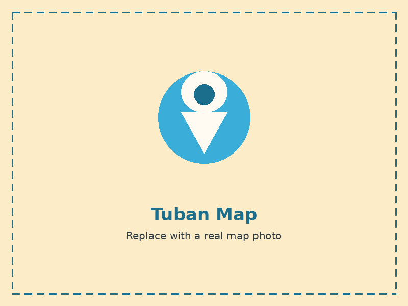
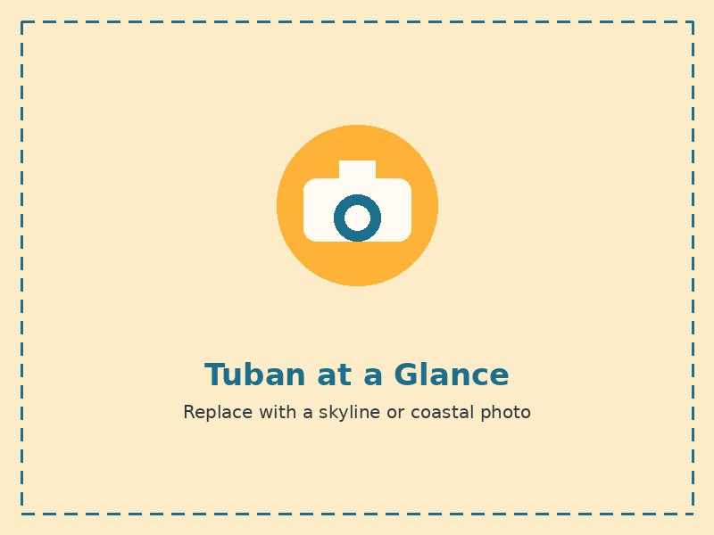

- Province East Java
- Nickname Kota Wali, the City of the Saints
- Coastline about 65 km
- Bordered north by the Java Sea
- Bordered east by Lamongan Regency
- Bordered south by Bojonegoro Regency
- Bordered west by Rembang Regency, Central Java
A coastal town on the northern route
Tuban Regency lies along the northern coast of Java, with a shoreline stretching roughly 65 kilometers. Because of this location, the sea shapes much of everyday life here, from the fishermen who set out early each morning to the port that has kept the town connected to trade for generations.
Tuban is also known as Kota Wali, or the City of the Saints. The nickname comes from its role as one of the historic centers for the spread of Islam in Java, marked by the tombs of several respected saints, including Sunan Bonang, which are still visited by pilgrims today. Alongside this history, the region is also known for legen, a sweet drink tapped from the flower of the siwalan palm.